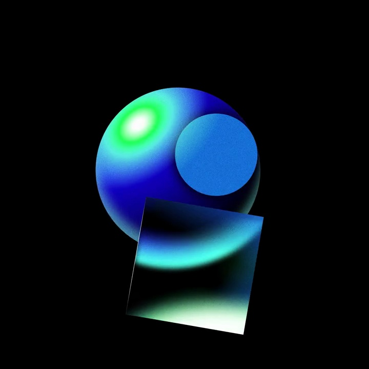
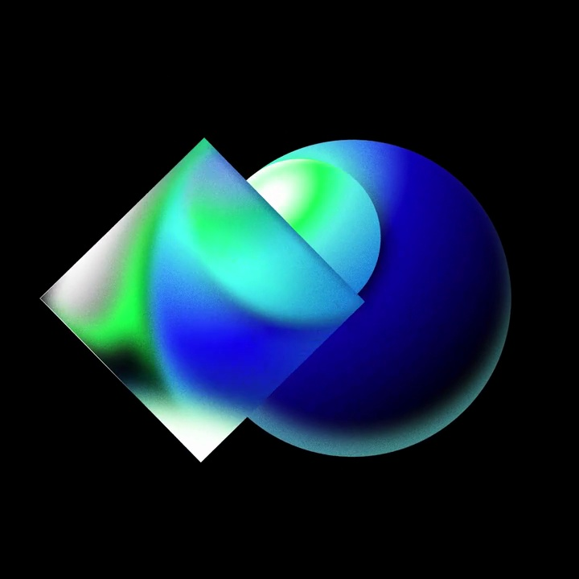
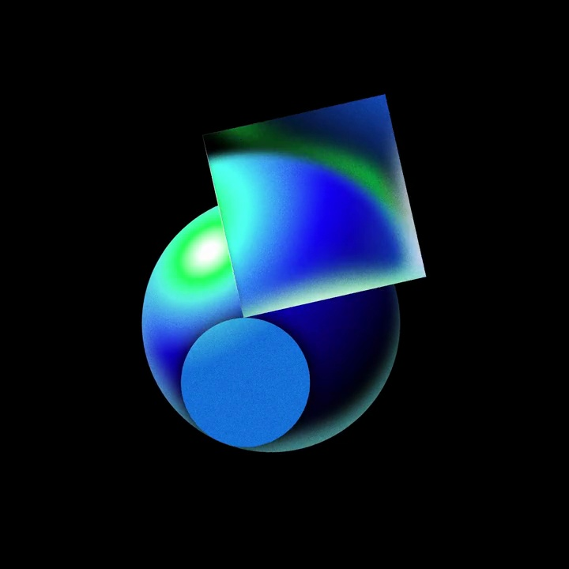

GitHub / V349
Universe 2023｜几何循环
一颗球、一块圆片和一块方片组成紧凑的旋转构图。方片绕中心移动，遮挡关系让平面也有空间感。
构图与编排 可播放 · 可替换内容
整体编排规则示例
查看 HTML 源码
<!doctype html><html lang="zh-CN"><meta charset="utf-8"><meta name="viewport" content="width=device-width,initial-scale=1"><title>Universe 2023｜几何循环 · sequence</title><style>html,body{margin:0;width:100%;height:100%;overflow:hidden;background:#000000}canvas{display:block;width:100%;height:100%;object-fit:contain}</style><body data-mode="sequence"><canvas width="1000" height="600"></canvas><script src="data.js"></script><script src="common.js"></script><script src="scene.js"></script><script src="bridge.js"></script></body></html>画面元素蓝绿球体蓝色圆片渐变方片
MOTION LANGUAGE
动作与构图
局部动作 · 构图规则
01
三种形状分开控制
三种形状分开控制规则示例
查看 HTML 源码
<!doctype html><html lang="zh-CN"><meta charset="utf-8"><meta name="viewport" content="width=device-width,initial-scale=1"><title>Universe 2023｜几何循环 · sequence</title><style>html,body{margin:0;width:100%;height:100%;overflow:hidden;background:#000000}canvas{display:block;width:100%;height:100%;object-fit:contain}</style><body data-mode="clip" data-start="0.7" data-end="7.5"><canvas width="1000" height="600"></canvas><script src="data.js"></script><script src="common.js"></script><script src="scene.js"></script><script src="bridge.js"></script></body></html>球体保持大体居中，圆片靠着球面移动，方片同时改变位置与角度。近侧盖在球前，远侧退后；不要把三个物体锁成一张整图旋转。
02
光泽统一，轮廓要不同
黑底承托蓝、绿、青高光。球体用圆滑明暗，方片用方向性渐变，圆片保留较平的蓝面。循环末段缩小整组，为再次出现留黑场。
03
用于背景时保留空白
适合短片过渡或品牌纹理。更换几何或材质时仍保留一个体积主体与两种平面，避免添加解释文字遮住遮挡关系。
SEQUENCE
段落与节奏
点击段落，定位到上方编排示意。



画面参考 · 离散静帧
KEEP THE RELATIONSHIPS
制作其他主题
- 可换几何和高光色；保留独立轨道、遮挡排序与整体收缩。
制作约束
蓝绿球体 / 蓝色圆片 / 渐变方片
- 球体保持大体居中，圆片靠着球面移动，方片同时改变位置与角度。近侧盖在球前，远侧退后；不要把三个物体锁成一张整图旋转。
- 黑底承托蓝、绿、青高光。球体用圆滑明暗，方片用方向性渐变，圆片保留较平的蓝面。循环末段缩小整组，为再次出现留黑场。
- 适合短片过渡或品牌纹理。更换几何或材质时仍保留一个体积主体与两种平面，避免添加解释文字遮住遮挡关系。